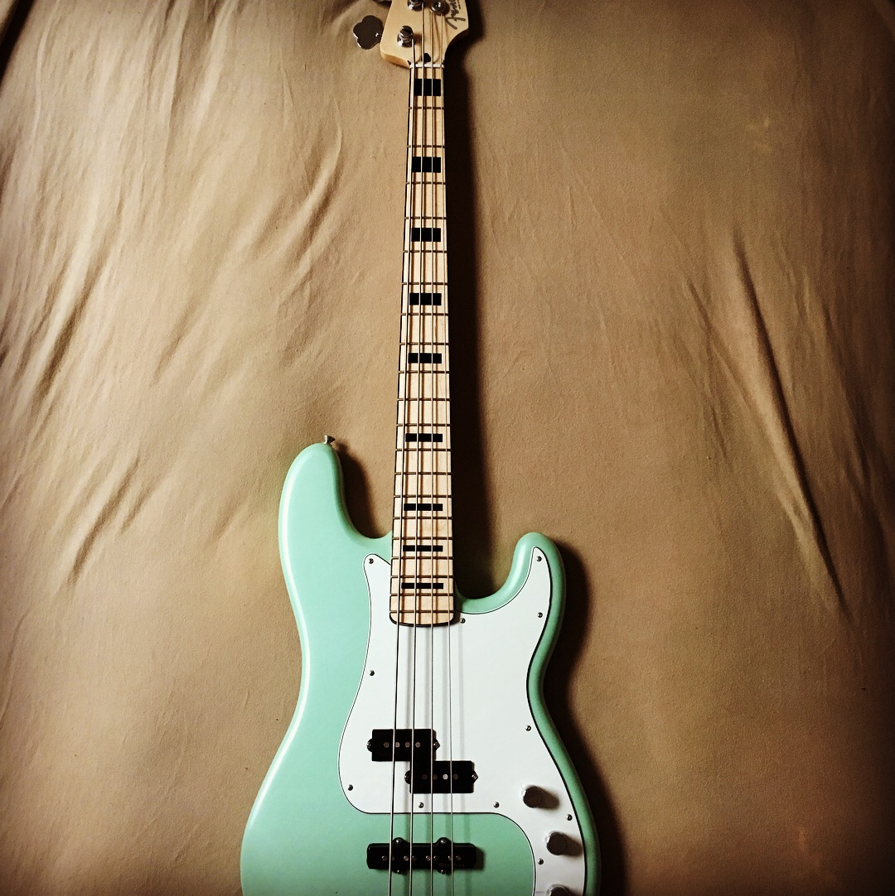
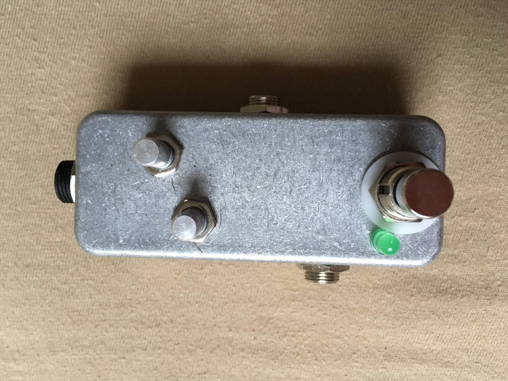

A part of my non-academic passions is music, I decided to share a bit about my gear,
the future of my musical pursuits and maybe even song demos once I get something of
salt recorded and processed!
GUITARS, BASSES, ETC:

Fender Special Edition Deluxe PJ Bass Sea Foam Pearl
This is my most recent bass guitar purchase. I'm very satisfied with the bass overall. Highly playable, excellent tones.
The stock factory strings take a little bit of playing to wear in as they initially have a really unfavorable twangy and
metallic sound to them. Works well with my Fender Rumble 25 Watt amp.
AMPS:
Fender RUMBLE 25 1x8 25W Bass Combo Amp
Bought this amp with my Fender PJ bass from above. The amp is small and low wattage, but still packs
a mean punch. Pairs well with the PJ bass. Comes with a button switch for overdrive that sounds reasonably okay for the size
and price of the amp. Would recommend a dedicated overdrive pedal, though.
EFFECTS PEDALS:

BYOC - Kuzco Jr. Fuzzy/Overdrive Pedal
This is my first pedal, a DIY kit from Build Your Own Clone. It's a mini--pseudo-clone of the Way Huge Red Llama
overdrive pedal, which is based on the Craig Anderton Tube Sound Fuzz. It's effectively a fuzzy-overdrive pedal and
compatible with bass guitars. My first foray into putting together my own pedals, albeit, using a DIY kit. Practice with
soldering circuit components to PCBs was at least gained!
LISTS OF BRANDS I LIKE AND OTHER RECOMMENDATIONS:
Fender - Guitars, Basses, and Amps
Acoustic - Some killer Amps
Jim Dunlop - MXR Effects Pedals
Build Your Own Clone - DIY Effects Pedals